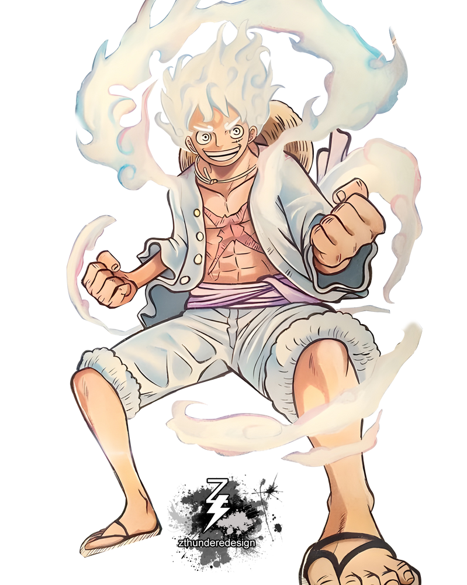
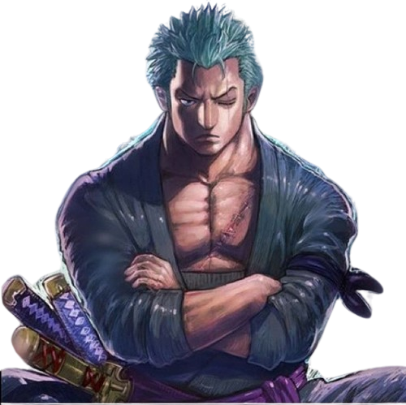

Liderada por Monkey D. Luffy, é a tripulação principal da série.

Monkey D. Luffy Luffy é um jovem destemido que quer se tornar o Rei dos Piratas. Ele parte em uma jornada com sua tripulação, os Chapéus de Palha, para encontrar o lendário tesouro One Piece. Ao longo do caminho, ele enfrenta desafios, faz amigos e desafia o Governo Mundial. Sua determinação e natureza altruística o tornam um protagonista cativante em "One Piece".

Roronoa Zoro Zoro é um espadachim habilidoso que se junta aos Piratas do Chapéu de Palha em sua busca pelo tesouro lendário, One Piece. Determinado a se tornar o maior espadachim do mundo, ele enfrenta desafios, aprimora suas habilidades e desenvolve laços fortes com seus companheiros de tripulação, especialmente com Luffy. Sua lealdade e habilidades de combate o tornam um dos personagens mais marcantes de "One Piece".
×
Foto
Nome
Origem da Ilha
Valor de Recompensa
Luffy
East Blue
1.500.000.000 Berries
Zoro
East Blue
320.000.000 Berries
Barba Branca
Liderada por Edward Newgate, também conhecido como Barba Branca.
Big Mom
Liderada por Charlotte Linlin, também conhecida como Big Mom.
Piratas das Feras
Liderada por Kaido.
Barba Negra
Liderada por Marshall D. Teach, conhecido como Barba Negra.
Piratas do Ruivo
Liderada por Shanks, o Ruivo.
Piratas do Sol
Originalmente liderada por Fisher Tiger e depois por Jinbe.